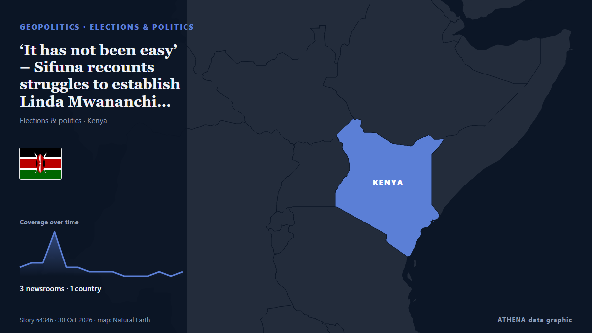

‘It has not been easy’ – Sifuna recounts struggles to establish Linda Mwananchi movement

Nairobi Senator Edwin Sifuna has recounted the challenges faced by the Linda Mwananchi movement in organising political meetings, alleging that its supporters encountered disruptions and intimidation… von People Daily
Unabhängig gemeldet von 3 Medien in 1 Land seit dem 30. Okt., zuerst von People Daily; die Berichterstattung flaut ab. ATHENA stuft das Risiko als mäßig ein (2.7/10), vor allem wegen der Schwere des beschriebenen Schadens und möglicher Folgewirkungen. Die Konfidenz liegt bei 54 % (mittel): 3 Medien bestätigen es unabhängig, bei einer mittleren Verlässlichkeit der Quellen von 73 %.
Warum es wichtig ist: Sicherheits- und diplomatische Entwicklungen können Bündnisse, Handel und Märkte weit über die direkt beteiligten Länder hinaus verschieben.
Was sich geändert hat: 28 neue Berichte von 3 Redaktionen in den 24 Stunden bis 31. Okt..
Erste Schlagzeile: Why Sifuna must seize Linda Mwananchi momentum after Nairobi party launch
Schlagzeilen werden auf Englisch angezeigt, wie veröffentlicht.
Auf einen Blick
Ausgewählt, bewertet und geschrieben nach der veröffentlichten Methodik von ATHENA. Kein Redakteur greift in einzelne Ereignisse ein. So entsteht ATHENA ›
| 30 Oct 06:27 UTC | 2 |
|---|---|
| 30 Oct 07:27 UTC | 3 |
| 30 Oct 08:27 UTC | 3 |
| 30 Oct 09:27 UTC | 10 |
| 30 Oct 10:27 UTC | 2 |
| 30 Oct 11:27 UTC | 2 |
| 30 Oct 12:27 UTC | 1 |
| 30 Oct 13:27 UTC | 1 |
| 30 Oct 14:27 UTC | 1 |
| 30 Oct 15:27 UTC | 0 |
| 30 Oct 16:27 UTC | 0 |
| 30 Oct 17:27 UTC | 0 |
| 30 Oct 18:27 UTC | 1 |
| 30 Oct 19:27 UTC | 0 |
| 30 Oct 20:27 UTC | 1 |
| 30 Oct 21:27 UTC | 0 |
| 30 Oct 22:27 UTC | 0 |
| 30 Oct 23:27 UTC | 0 |
| 31 Oct 00:27 UTC | 0 |
| 31 Oct 01:27 UTC | 0 |
| 31 Oct 02:27 UTC | 0 |
| 31 Oct 03:27 UTC | 1 |
| 30 Oct 07:34 UTC | 0.0 |
|---|---|
| 30 Oct 08:38 UTC | 4.4 |
| 30 Oct 08:48 UTC | 2.2 |
| 30 Oct 09:19 UTC | 2.8 |
| 30 Oct 09:51 UTC | 2.2 |
| 30 Oct 10:25 UTC | 3.4 |
| 30 Oct 19:37 UTC | 2.8 |
| 31 Oct 03:44 UTC | 2.7 |
Warum diese Zahlen
Bedeutung
Risiko
Konfidenz
Die Berichterstattung – wer berichtete, und wann
Schlagzeile wie veröffentlicht · öffnet das Original- People Daily · Kenia · KenyaLinda Mwananchi Movement office launch: Sifuna’s biggest political test begins as 2027 race takes shape
- People Daily · Kenia · KenyaPauline Njoroge hails Sifuna for constitutionalism and invokes the Bible
- People Daily · Kenia · KenyaWhy Sifuna must seize Linda Mwananchi momentum after Nairobi party launch
- People Daily · Kenia · KenyaTim Wanyonyi officially joins Linda Mwananchi Movement
- Capital FM · Kenia · KenyaWinnie Odinga set to attend Sifuna’s Linda Mwananchi launch amid Nairobi Senate bid
- People Daily · Kenia · KenyaSifuna launches Linda Mwananchi headquarters in Nairobi
- People Daily · Kenia · KenyaList of opposition principals attending launch of Linda Mwananchi Movement headquarters
- People Daily · Kenia · Kenya‘It has not been easy’ – Sifuna recounts struggles to establish Linda Mwananchi movement
- People Daily · Kenia · KenyaSifuna pledges to put citizens first, uphold constitutionalism
- People Daily · Kenia · KenyaSifuna unveils Linda Mwananchi Movement leadership structure as Natembeya, Osotsi get key posts
- People Daily · Kenia · KenyaSifuna pledges Ksh500B budget cuts if he forms govt
- People Daily · Kenia · KenyaOrengo absent as Linda Mwananchi officially launches party
- People Daily · Kenia · KenyaKawira Mwangaza takes up leadership role in Linda Mwananchi movement
- People Daily · Kenia · KenyaWamalwa: I will support Sifuna if picked as opposition’s presidential candidate
- People Daily · Kenia · KenyaKalonzo booed after claiming Sifuna is not yet a presidential candidate
- People Daily · Kenia · KenyaSifuna forced to intervene as crowd boos Kalonzo at Linda Mwananchi headquarters launch
- People Daily · Kenia · KenyaCaroli Omondi: Linda Mwananchi no longer a movement, we have become a party
- Capital FM · Kenia · KenyaSifuna sets November 13 convention as Linda Mwananchi targets 47 counties
- People Daily · Kenia · Kenya‘Remove mud in your eyes’ – Atwoli’s wife hits back at COTU boss over Sifuna criticism
- People Daily · Kenia · KenyaNatembeya urges tolerance after crowd boos at Kalonzo at Linda Mwananchi Movement headquarters launch
- People Daily · Kenia · KenyaLinda Mwananchi launch: Karua calls for unity to solve Kenya’s leadership crisis
- Capital FM · Kenia · KenyaKalonzo urges opposition unity and sacrifice after being booed at Sifuna event
- People Daily · Kenia · KenyaMatiang’i ally Onyonka lands top position in Sifuna’s Linda Mwananchi
- People Daily · Kenia · KenyaWinnie Odinga and Orengo skip Sifuna’s Linda Mwananchi official party launch
- The Standard · Kenia · KenyaKalonzo jeered during Linda Mwananchi party launch
- People Daily · Kenia · KenyaInside Sifuna’s 2027 game plan to woo women and Gen Z through Linda Mwananchi
- The Standard · Kenia · KenyaOpposition leaders invoke 2002 unity as Sifuna launches Linda Mwananchi
- People Daily · Kenia · KenyaODM woos Kalonzo after booing at Linda Mwananchi event